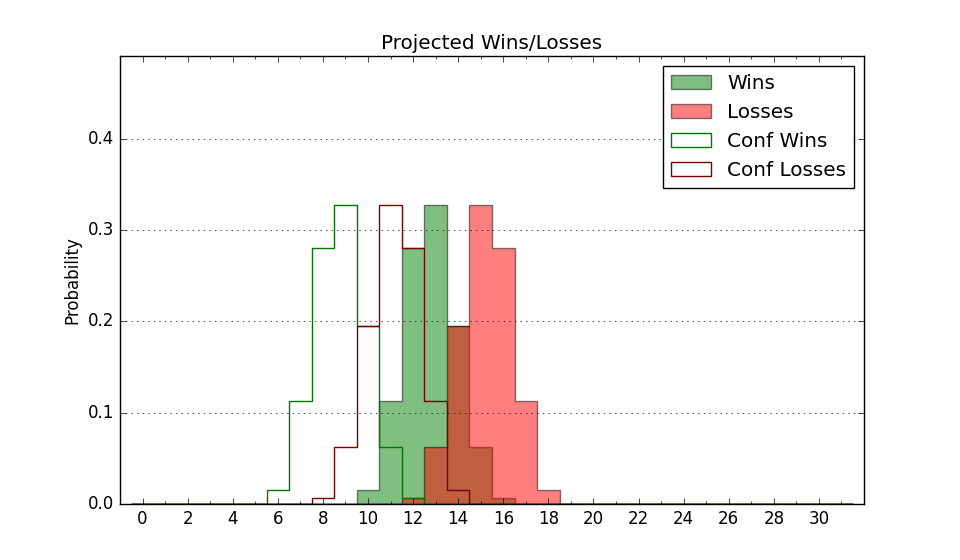

| Home | Game Probabilities | Conferences | Preseason Predictions | Odds Charts | NCAA Tournament |
| City: | Ruston, Louisiana | |
| Conference: | Conference USA (7th)
| |
| Record: | 6-8 (Conf) 10-12 (Overall) | |
| Ratings: | Comp.: 3.4 (131st) Net: 3.3 (131st) Off: 104.2 (143rd) Def: 100.8 (137th) SoR: 0.0 (154th) |
| Remaining | ||||||
|---|---|---|---|---|---|---|
| Date | Opponent | Win Prob | Pred. | |||
| 2/16 | North Texas (55) | 38.4% | L 58-61 | |||
| 2/18 | Charlotte (106) | 57.4% | W 64-62 | |||
| 2/23 | @ Western Kentucky (170) | 42.5% | L 70-72 | |||
| 2/25 | @ Middle Tennessee (116) | 31.1% | L 67-73 | |||
| 3/2 | FIU (218) | 80.0% | W 76-66 | |||
| 3/4 | Florida Atlantic (32) | 29.9% | L 68-74 | |||
| Previous | Game Score | |||||
| Date | Opponent | Win Prob | Result | Off | Def | Net |
| 11/14 | @Texas Tech (51) | 14.2% | L 55-64 | -11.3 | 13.5 | 2.2 |
| 11/17 | @Louisiana Lafayette (122) | 31.7% | L 88-94 | 13.2 | -11.9 | 1.3 |
| 11/21 | Louisiana Monroe (271) | 86.3% | W 79-58 | 0.1 | 12.3 | 12.3 |
| 11/23 | @Alabama A&M (336) | 79.1% | W 80-75 | -4.2 | -3.0 | -7.2 |
| 11/25 | @Samford (150) | 39.9% | W 79-76 | 4.6 | 13.2 | 17.8 |
| 12/2 | Southern (246) | 83.7% | W 74-59 | -1.6 | 14.2 | 12.5 |
| 12/10 | @Wyoming (171) | 42.7% | L 65-92 | -3.4 | -36.0 | -39.4 |
| 12/14 | Stephen F. Austin (118) | 60.8% | L 79-80 | -8.4 | -1.3 | -9.7 |
| 12/17 | @UTEP (176) | 43.6% | L 55-60 | -19.4 | 12.5 | -6.8 |
| 12/29 | UTSA (318) | 91.1% | W 91-69 | 11.8 | -6.1 | 5.7 |
| 12/31 | @Charlotte (106) | 28.3% | L 66-68 | 1.8 | -0.1 | 1.7 |
| 1/5 | @Rice (136) | 36.8% | W 88-82 | 10.5 | -0.7 | 9.8 |
| 1/7 | UTEP (176) | 72.5% | W 60-58 | -13.6 | 5.0 | -8.6 |
| 1/11 | @North Texas (55) | 15.4% | L 65-67 | 20.6 | -1.8 | 18.7 |
| 1/14 | UAB (71) | 43.9% | L 74-81 | 5.2 | -16.7 | -11.5 |
| 1/19 | Western Kentucky (170) | 71.5% | W 85-74 | 10.2 | -2.1 | 8.2 |
| 1/21 | Middle Tennessee (116) | 60.5% | L 51-68 | -28.5 | -9.9 | -38.4 |
| 1/26 | @UAB (71) | 18.7% | L 59-65 | -5.0 | 10.2 | 5.2 |
| 1/28 | @UTSA (318) | 75.1% | W 66-55 | 3.9 | 6.3 | 10.2 |
| 2/2 | Rice (136) | 66.5% | W 80-72 | 8.8 | -8.6 | 0.2 |
| 2/9 | @FIU (218) | 54.0% | L 62-66 | -15.9 | 7.0 | -8.9 |
| 2/11 | @Florida Atlantic (32) | 11.1% | L 85-90 | 19.9 | -4.8 | 15.0 |
| Stats & Trends | |||||
|---|---|---|---|---|---|
| Current | Day | Week | Month | Season | |
| Composite | 3.4 | -0.0 | +0.3 | -1.2 | -1.0 |
| Comp Rank | 131 | -- | +2 | -3 | -17 |
| Net Efficiency | 3.3 | -0.0 | +0.4 | -1.2 | -- |
| Net Rank | 131 | -- | +2 | -- | -- |
| Off Efficiency | 104.2 | -0.0 | +0.2 | +0.3 | -- |
| Off Rank | 143 | -- | -2 | -13 | -- |
| Def Efficiency | 100.8 | +0.0 | +0.2 | -1.5 | -- |
| Def Rank | 137 | -- | +8 | +3 | -- |
| SoS Rank | 103 | -- | +11 | +14 | -- |
| Exp. Wins | 12.8 | -0.0 | -0.6 | -1.5 | -2.8 |
| Exp. Conf Wins | 8.8 | -0.0 | -0.6 | -1.5 | -2.4 |
| Conf Champ Prob | 0.0 | -- | -- | -0.4 | -6.6 |

| Advanced Stats | ||
|---|---|---|
| Stat | Value | Rank |
| Off Eff FG % | 0.520 | 129 |
| Off Ast Ratio | 0.139 | 193 |
| Off ORB% | 0.275 | 161 |
| Off TO Rate | 0.162 | 218 |
| Off FT Ratio | 0.276 | 296 |
| Def Eff FG % | 0.528 | 272 |
| Def Ast Ratio | 0.165 | 322 |
| Def ORB% | 0.258 | 136 |
| Def TO Rate | 0.193 | 26 |
| Def FT Ratio | 0.382 | 318 |